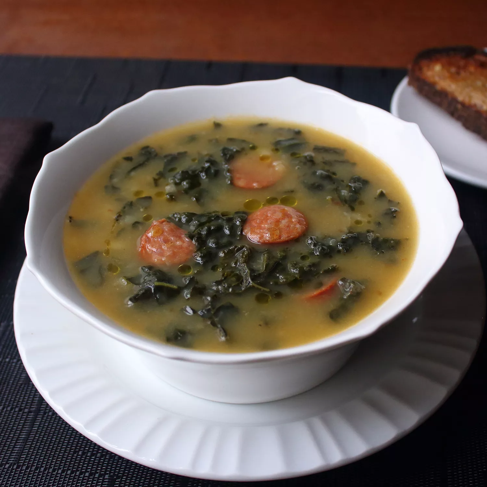

Caldo Verde

Caldo Verde, a beloved Portuguese soup, is a simple yet
soul-warming dish that captures the essence of Portuguese comfort food.
Caldo Verde is both nourishing and deeply satisfying, making it a cherished
staple in Portuguese households, especially during chilly evenings or
festive gatherings.
Ingredients
-
2 tablespoons (30g) unsalted butter
-
1 medium yellow onion or large leek, finely diced (about 8 ounces; 225g)
-
3 medium cloves garlic, sliced (about 1 tablespoon; 15g)
-
Kosher salt and freshly ground black pepper
-
About 6 tablespoons (90ml) extra-virgin olive oil
-
1 large russet potato, peeled, quartered, and cut into 1/4-inch slices (about 1/2 pound; 225g)
-
2 medium Yukon Gold potatoes, peeled, quartered, and cut into 1/4-inch slices (about 1/2 pound; 225g)
-
6 cups (1.4L) homemade or store-bought low-sodium chicken stock
-
1 bunch curly or lacinato kale, tough stems removed, leaves finely chopped (about 3/4 pound; 340g)
-
12 ounces (340g) cooked linguiça or other garlicky pork sausage, cut into 1/4- to 1/2-inch slices
-
Minced fresh chives, for garnish (optional)
Instructions
-
Heat butter in a large Dutch oven or saucepan over medium heat until melted.
Add onion (or leek) and garlic, season with salt and pepper, and cook,
stirring frequently, until softened but not browned, about 5 minutes,
adding olive oil as necessary to keep the mixture loose and moist.
-
Add potatoes and stock and bring to a simmer, stirring occasionally.
Add kale and continue to cook until russet potato slices have completely
broken down (you can press them with a spoon or potato masher for an even
thicker texture), the Yukon Golds are tender, the greens have softened,
and the soup has thickened to a creamy consistency, 25 to 30 minutes.
Stir in sausage. Season soup to taste with salt and pepper and serve
garnished with chives, if desired.